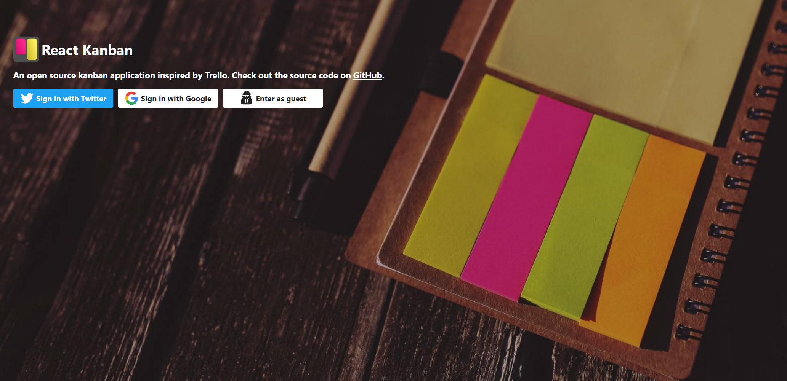

Setting up the project¶
Setting Up Node.js and Git¶
First, we need to have fresh versions of Node.js and Git installed. It is recommend using at least the LTS version of Node.js. You might run into hard to debug issues with older versions. Same can apply to versions newer than LTS because of their bleeding edge status.
Downloadin the React Kanban Project¶
We need to clone the project from git in GitHub Desktop or as follows at your terminal:
git clone https://github.com/markusenglund/react-kanban.git
This will create a new directory, kanban-app. Inside it you can find everything we need to get ahead. I recommend you check out the version specific of it:
cd kanban-app
git checkout v2.5.6
The repository contains a small seed application that shows Hello World! and basic Webpack configuration. To get the seed application dependencies installed, execute:
npm install
Upon completion you should see a node_modules/ directory containing the project dependencies.
Running the Project¶
To get the project running, execute npm start. You should see something like this at the terminal if everything went right:
> webpack-dev-server
http://localhost:8080/
webpack result is served from /
content is served from .../kanban-app
404s will fallback to /index.html
Child html-webpack-plugin for "index.html":
webpack: bundle is now VALID.
In case you received an error, make sure there isn’t something else running in the same port. You can run the application through some other port easily using an invocation such as PORT=3000 npm start (Unix only). The configuration will pick up the new port from the environment. If you want to fix the port to something specific, adjust its value at webpack.config.js.
Assuming everything went fine, you should see something like this at the browser:
{kind=link}
Some help:
npm run start (or npm start) - Starts the project in the development mode. Surf to localhost:8080 in your browser to see it running.
npm run build - Generates a production build below build/. You can open the generated index.html through the browser to examine the result.
npm run deploy - Deploys the contents of build/ to the gh-pages branch of your project and pushes it to GitHub. You can access the project below <user>.github.io/<project> after that. Before this can work correctly, you should set publicPath at webpack.config.js to match your project name on GitHub.
npm run stats - Generates statistics (stats.json) about the project. You can analyze the build output further.
npm run test (or npm test) - Executes project tests. The Testing React chapter digs deeper into the topic. In fact, writing tests against your components can be a good way to learn to understand React better.
npm run test:tdd - Executes project tests in TDD mode. This means it will watch for changes and run the tests when changes are detected allowing you to develop fast without having to run the tests manually.
npm run test:lint - Executes ESLint against the code. ESLint is able to catch smaller issues. You can even configure your development environment to work with it. This allows you to catch potential mistakes as you make them. Our setup lints even during development so you rarely need to execute this command yourself.